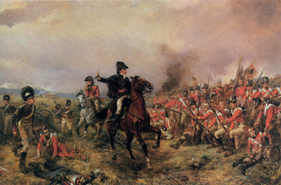

going home
The muddy water slowly dripped off a stone that was carefully lodged between two branches. The drop of water landed in the puddle of a cesspool. Two seconds later, another drip fell until the intermittent droplets became a down pour. A distant rumble shook the ground, adding to the ripples already created by the rain in the small pool of water. Then another rumble, this one was much closer. Jake's helmet fell off his head, taking Jake's reverie with it. It hit the puddle, giving a belching splash. “Oh no,” Jake said under his breath, he quickly bent down to retrieve his helmet. “Sarge is not going to be happy.” Sarge liked his helmets clean, thought Jake. The helmet was ruined now, the once shiny white swastika was now half smeared with mud and other miscellaneous substances. Jake quickly wiped off the mud with his sleeve and put the helmet back on.
The rain drizzled on, Jake began daydreaming again. The trench was dug deeply into the ground and the wooden planks were nailed into the walls, yet the wet mud still managed to seep through them. It was cold and smelly, the rainwater made it even worse. Jake relaxed his nerves and leaned back into the wall. Jake could feel the muddy water slowly oozing into his worn-out boots. He was keen to get back to his dreams. Jake could remember his father's words when he left for the army as if they were spoken just yesterday.
“Son, you leave for that no-good circus of an army, and you won't be coming back. You might be back in Germany, but you're not coming back here. Not in this house, never.” He said that with so much rage, his eyes were so hard and unforgiving, his jaw was clenched harder than a vice. Jake hated it, hated that his father was not proud of his actions, hated to hurt his parents, and most of all he hated that he couldn't live up to his father's expectations. Jake left, slamming the door in front of his father's face. The sobs of his mother slowly rescinded in his mind. Jake remembered his friends, Joe and Carl, greeting him when he came out onto the street. They had big smiles on their faces, laughing and joking all while slapping Jake on the back for joining them in the army.
That was a year ago, their faces were much different now. Lifeless with no joy, eyes just blankly staring. Joe died on the first day, a stray bullet went clean between his eyes, he never even knew what hit him. Carl died a few months later, he was ripped to shreds when he had converged on a land mine, although as he died he actually saved his company from crossing into a death trap. Jake could be next. For once in his lifetime, his father was right. He wasn't coming back. Jake could feel his life gradually ebbing away. How he missed his father's hold, his big proud smile and his mother's warm hugs. Jake could smell the cold air, it was full of smoke, blood and urine. Jake longed to go home.
Every gun that is made, every warship launched, every rocket fired, signifies in the final sense a theft from those who hunger and are not fed, those who are cold and are not clothed.
Dwight D. Eisenhower World Speeches
A slow whistling sound grew louder and louder, Jake remembered where he was, as he started running down the trench line. The rain had made the soil so muddy that he swore his feet sunk in four inches. Every step he took was harder than the last. “They're firing shells at us!” his voice cracked over the noise of the rain. “Get under cover!” A loud explosion, no more than ten feet from where he was standing. Jake quickly dived into the ground, the mud sloshed all over his uniform. Shrapnel whizzed past his head and he could feel the heat from behind him.
The burning sensation grew hotter and hotter. Jake tried to move, but he couldn't. Jake tried again but he didn't budge. The rain started pouring even harder. The puddle had developed into a river. Jake could see the water line rising above his cheek, already covering his mouth. The mud was choking him, he couldn't breath. The rain was so cold and hard, that it felt like hail. This is it, he thought, this is how I am going to die.
Jake's vision started to get blurred, he struggled to keep focus. Jake spotted a wooden board attached to the right bank of the trench. He put his last ounce of strength into his arms and pushed. His arms were lead heavy. “NO!” he said in defiance, he spat out the mud and pushed. Jake pushed himself again, and again. His slow progress towards the wooden board was agonizing. His helmet tipped and covered his eyes. Jake couldn't see where he was going. Jake felt like he could go no further.  He stretched out his hand frantically searching for the board. Jake's hand landed on something solid, he tried to grab onto it, but his hands slipped, there was too much mud on his hands. Cursing as he tried again. His arm took forever to lift, he grabbed onto it and yelled out in anger, gave it one final push and dragged himself out and above the mud. Jake leaned into the bank, panting for a moment, he swiveled his head around.
Where his legs should have been, there were only black charred vestigial stubs. Jake fainted. In the distant noises, he could hear shouts, bells, whistles, men rushing to and fro. Men in pain, screaming in agony, medics trying to calm them. Gunshots, and the rapid rat-tat-tat of the machine guns. Sleep felt so good, the pain of living was starting to be unbearable. For the first time in his year of bloody war, Jake started crying. Tears rolled down his dirty cheeks. But they were not just tears of sorrow, pain or joy. It was the tears of everything that had happened since the day the war started. It felt too hard to hold it all in anymore. Then he heard footsteps rushing towards him. Someone shouted “Don't worry, I've got you. You're going home, you're going home.” His voice slowly faded away.
A cool breeze went pass his head, Jake could feel the wind brushing his blond scroungy hair sideways, his hair slowly waved like grass that was blown to and fro. Everything was so quiet, the sound of the pounding rain, distant booms, screams of agony, rifle shots, they were all gone. All the noises were gone. It was no longer cold, there was no rain. Jake felt dry and warm. The aching muscles he once had were silent. It was so peaceful and tranquil that Jake felt he could just keep sleeping. He opened his eyes, everything was white. He was lying in a white bed and he was alone. Is this heaven, he thought. Jake turned his head around in the direction of the breeze. There was a window open. The white ceiling was covered in the pictures of cars and women. A hazel colored bookshelf sat in the corner. A hand touched his shoulder. Jake turned around and saw his father and mother smiling at him. They hadn't changed a bit. His father said “Welcome back son. You're home.”